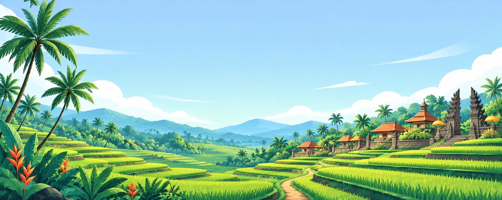
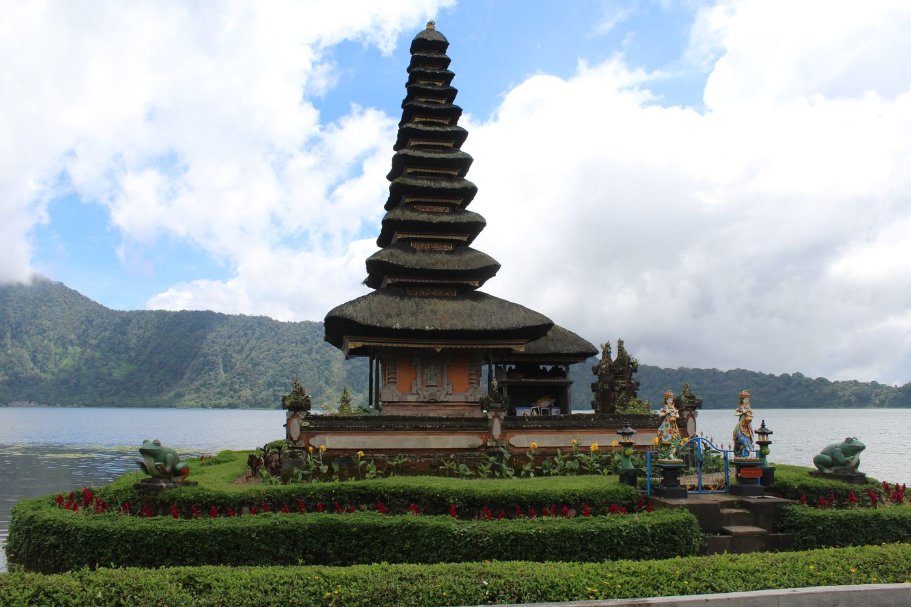
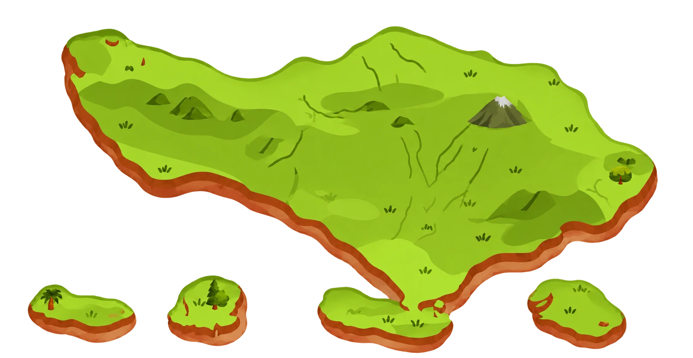
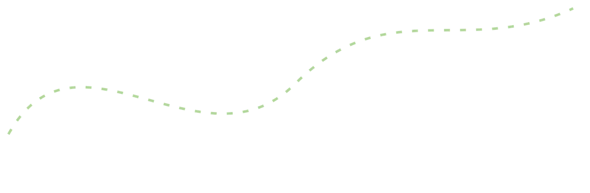
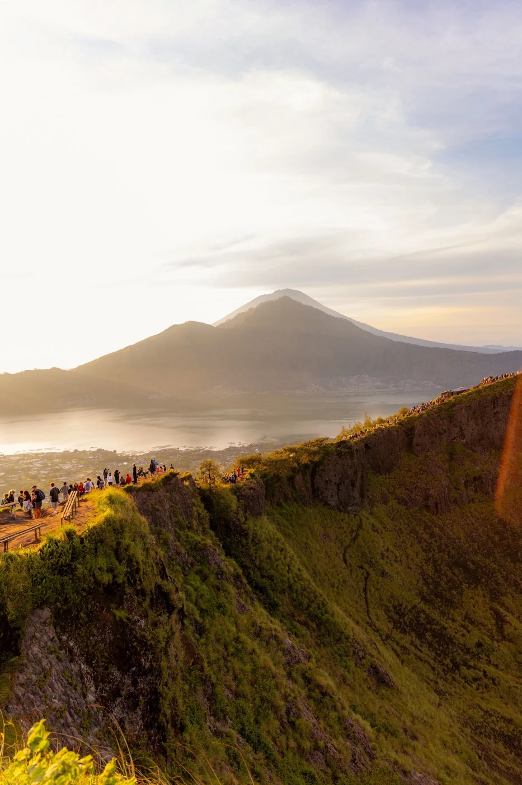
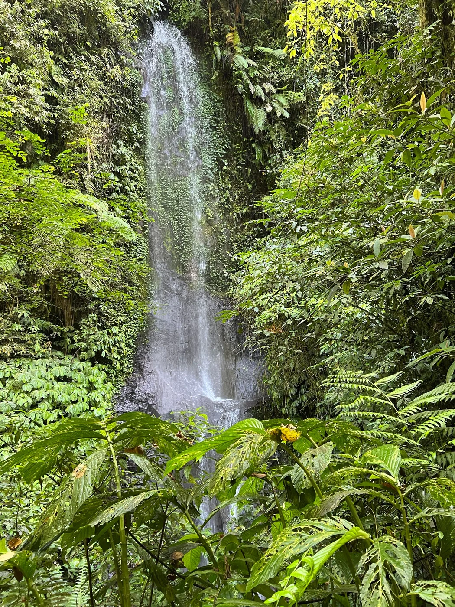
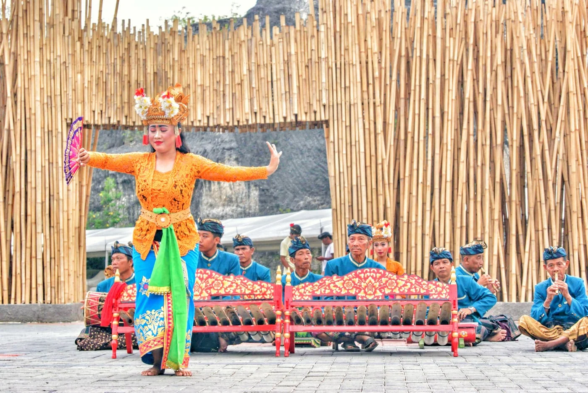
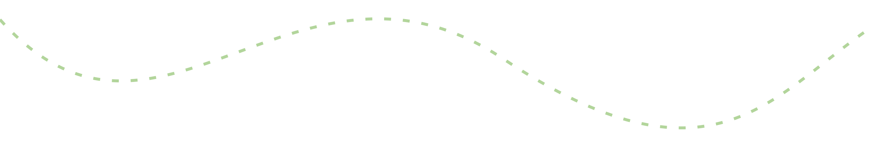

Satu pulau.
Begitu banyak cerita.
Bali bukan hanya pemandangan yang kamu bawa pulang. Ada tradisi di setiap sudut, kehidupan di antara sawah, dan cerita yang tumbuh bersama orang-orangnya.
Kenali Bali lebih dekat →
Kenali tempatnya. Temui ceritanya. Rasakan kehidupannya.
Mulai membaca ↓
⌖ Danau Beratan, BaliBali bukan hanya pemandangan yang kamu bawa pulang. Ada tradisi di setiap sudut, kehidupan di antara sawah, dan cerita yang tumbuh bersama orang-orangnya.
Kenali Bali lebih dekat →
●Bali · Pulau penuh cerita
Setiap sudut punya cerita.
Mulai dari yang membuatmu penasaran!


Di balik ramainya pasar dan tenangnya desa, keseharian terus berjalan. Tradisi hadir dalam hal sederhana—bertemu, berkarya, dan menjaga apa yang diwariskan.
Baca cerita kehidupan →
Sejenak di antara hijau.Ada cerita di balik jalan yang kamu lewati. Dari teduhnya hutan sampai gerak tari yang penuh warna, beri waktu untuk mengenal Bali dengan caramu.
Jelajahi catatan perjalanan →
Temukan sudut Bali yang ingin kamu kenali.
Buka peta Bali →